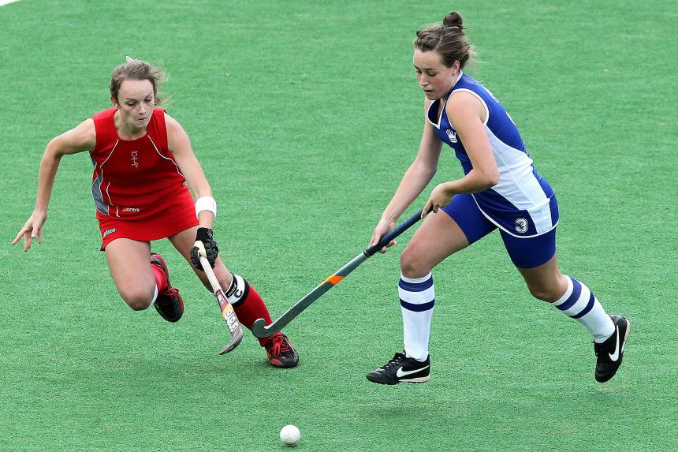
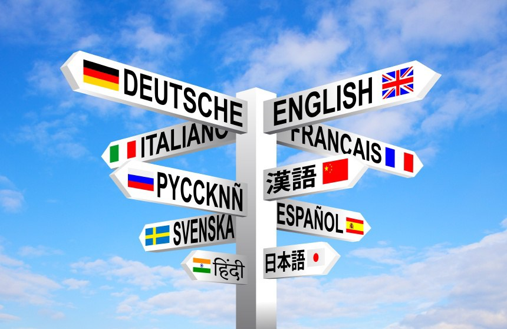
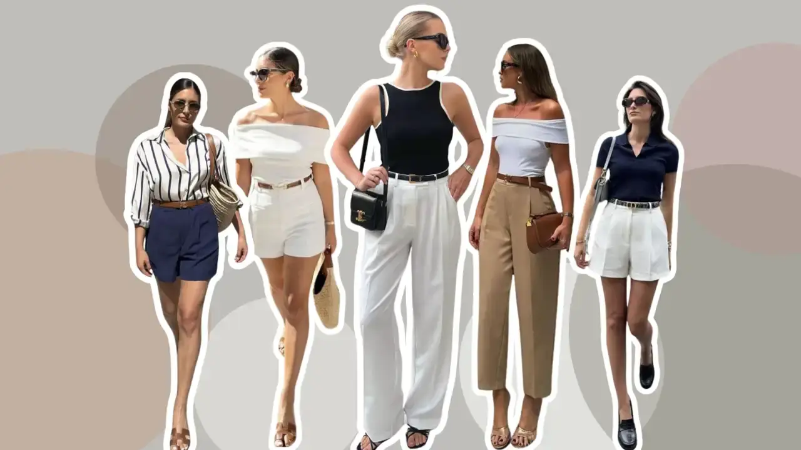

During my childhood I played several sports including basketball or hockey, and opted for swimming when I was in need of freeing my mind. Both team sports taught me the importance of teamwork by showing how this key feature led to success. On the other hand, the individual sport helped me maintain my body fit and healthy, as well as relaxing when having a busy day.
Sports

Languages

I consider myself a person who has always been open to learning about other cultures. Even though Spanish is my mother tongue, back in high-school I got offered the opportunity of polishing other languages. Consequently, I have the following certificates:
- English: C2-Cambridge Proficiency Certificate
- German: B1-Goethe Institut Certificate
Music
To my mind, music is the perfect refuge and the best companion for any moment of the day. Whether I need to relax, concentrate, or simply get carried away by a melody, there is always an ideal song for every emotion. Besides, I used to play the piano, which makes me feel even more connected to every note and rhythm.
Style

I enjoy sharing my style and daily life on social media because it can be seen as a creative outlet where I can express who I am. It does not matter if I am posting a new outfit, a snapshot of my routine, or just connecting with others, it is a useful way to capture my favorite moments and inspire people along the way.